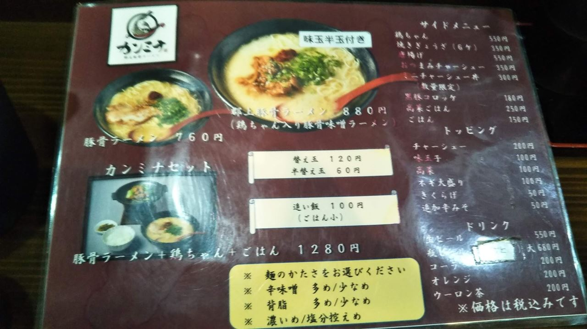
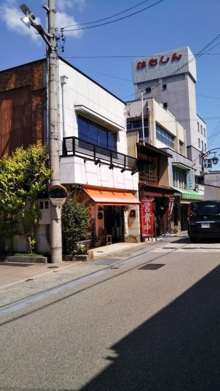
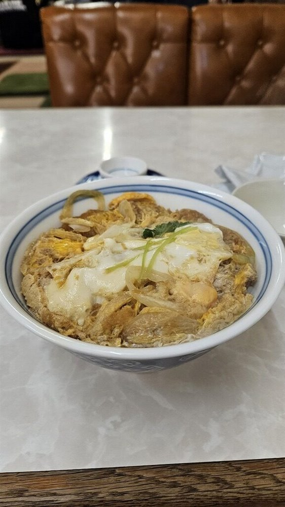
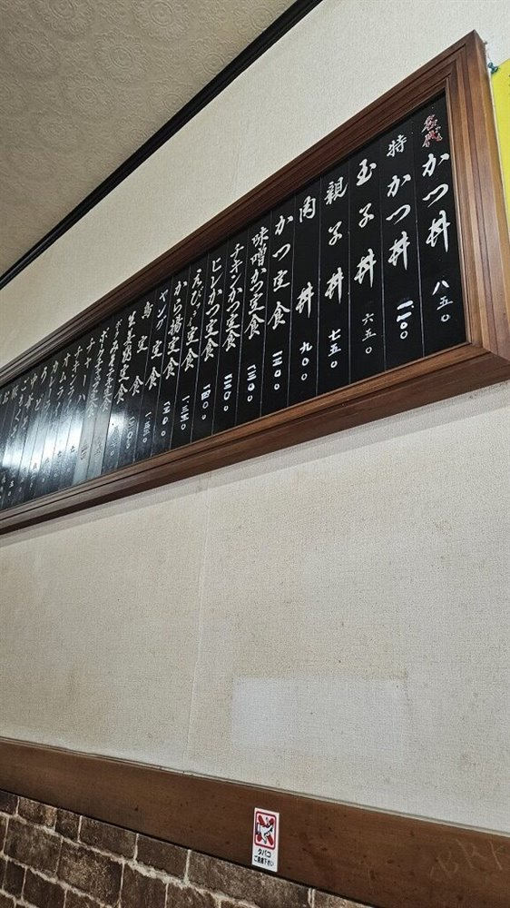
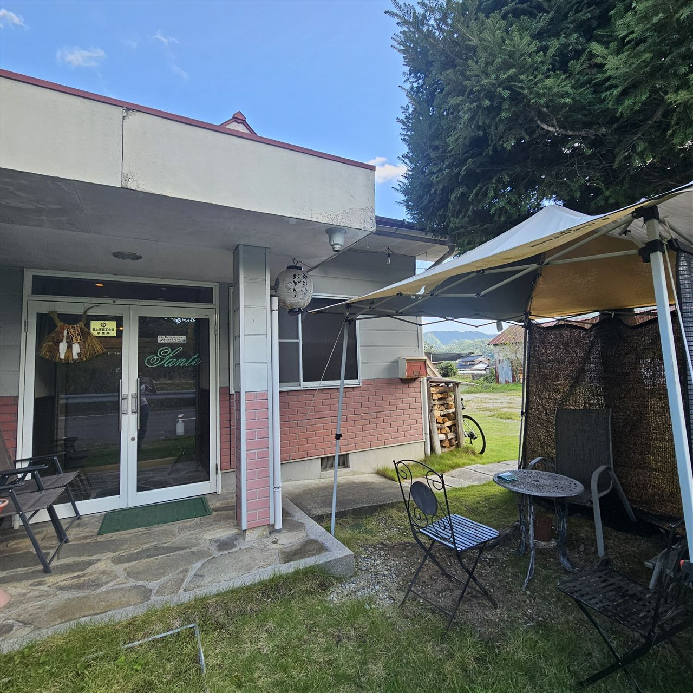
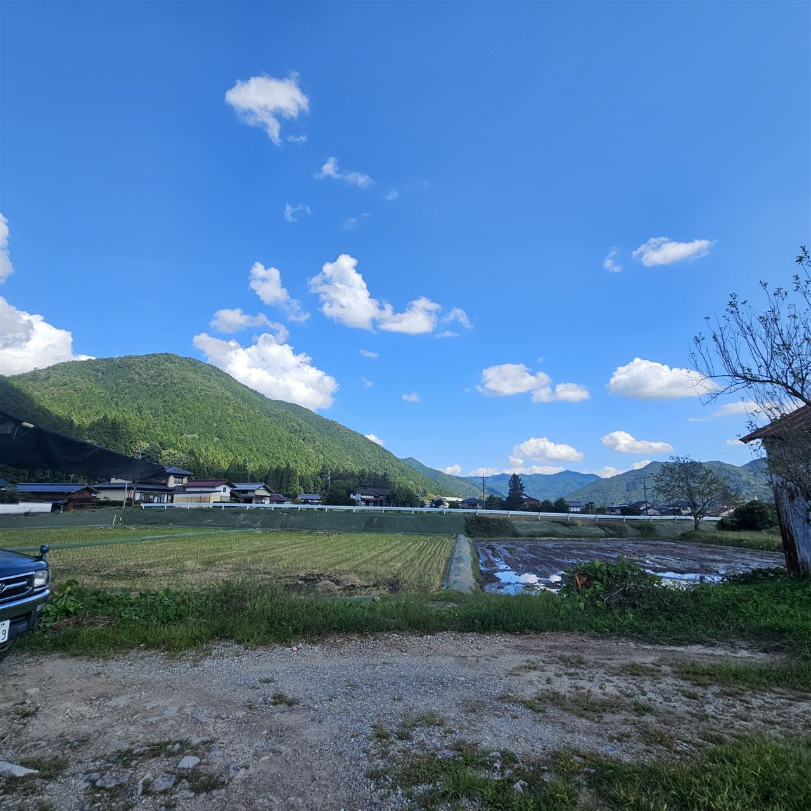
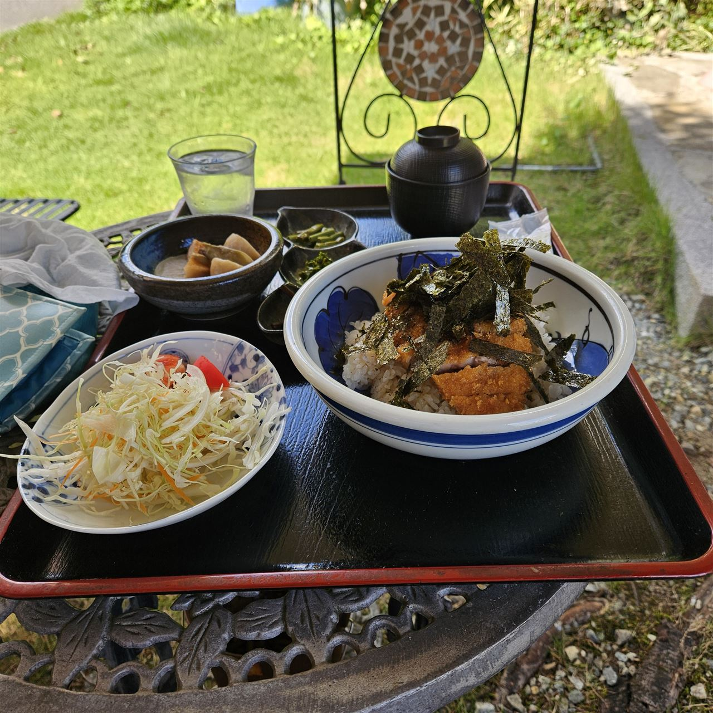
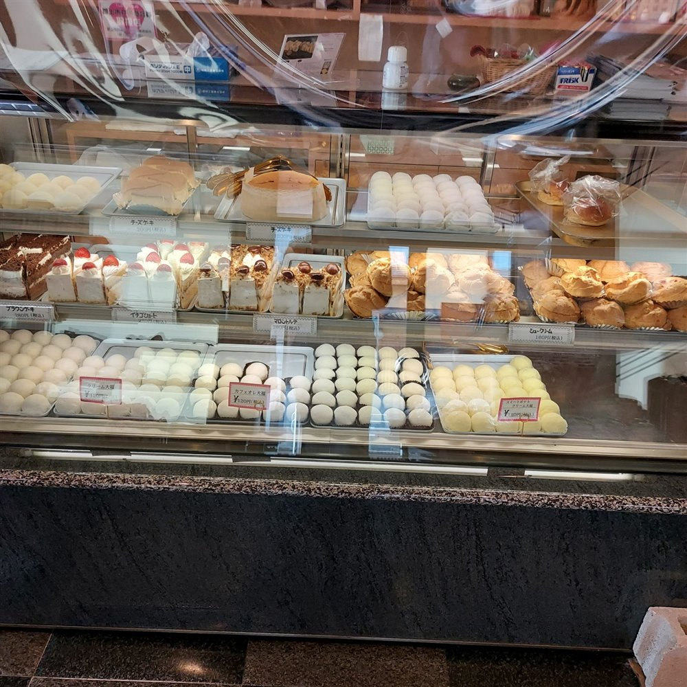

長良川沿いを北上する､美並から郡上白鳥､和良までのお店です｡
粥川の里の奥にある､ライド中のごちそうカフェ


美並の粥川の里､星宮神社の近くにあるカフェです｡訪れたのはお昼前の11時でしたが､店内はとても賑わっていました｡
モーニングの時間をすぎていたので､ランチのナポリタンをいただきました｡この先には難所の八王子峠が待っているので､ここでしっかり補給していきます｡コガイチなど､高賀山周辺のコースにおすすめです｡
長良川沿いの古民家で､手作りパンとコーヒーを


美並温泉の手前にある､サイクリストでいつも賑わっているカフェです｡店内の調度品がとてもセンスよく､ゆっくり話がはずみます｡
おすすめはチーズケーキですが､手作りパンも絶品です｡コーヒーに好きなパンを組み合わせて､郡上方面へのライドの休憩にどうぞ｡セキサイでは､郡上八幡へ行く鉄板コースのティータイムにもなっています｡
郡上白鳥の道の駅にある､行列のできるラーメン屋さん


郡上白鳥の道の駅にあるラーメン屋さんです｡名物は｢郡上豚骨｣｡観光地のラーメンは当たり外れがありますが､ここのラーメンは本当においしいと評判です｡
11時台でも外に行列ができるほどの人気なので､早めの到着がおすすめです｡
郡上八幡の町なかのメイン通りの中央にも､お店があります｡11時開店で､並んで入店しました｡味は一蘭によく似ていて､とてもおいしいです｡
福井風の薄いカツが何枚も入った､駅前のカツ丼


郡上白鳥の駅前にある食堂です｡名物は福井県風のカツ丼で､薄いカツが何枚も入っていて､とてもおいしいと評判です｡
110kmほど走ったあとに食べるカツ丼は格別です｡郡上や石徹白方面へのライドの締めにどうぞ｡
田んぼと山を眺めながら食べる､屋外席のカツ重



郡上市和良にあるレストランです｡入口には郡上市商工会員のステッカー､お店の前の芝生にはテントとテーブル席が出ていて､田んぼと山をきれいに見渡せます｡
注文したのはカツ重定食｡サラダと小鉢､お椀つきで､カツの上には海苔が山盛りです｡ロードバイクで山を走ってきたのに､重の上にも山がありました｡風を感じながらいただくカツ重は格別です｡
ショーケースにお菓子とパンが並ぶ､美並の和菓子屋さん

美並の中心部､苅安にある和菓子屋さんで､郡上方面へのライドでいつも立ち寄るお店です｡ショーケースには､色とりどりのお菓子とおいしそうなパンが並びます｡
いつも混み合っている人気店です｡家から30kmほどの地点にあり､補給のタイミングにもちょうどよい場所です｡
※紹介は､トマト工業ブログ(2016年〜2026年)の記事をもとにしています｡営業時間や定休日は変わることがあるので､お出かけの前にご確認ください｡